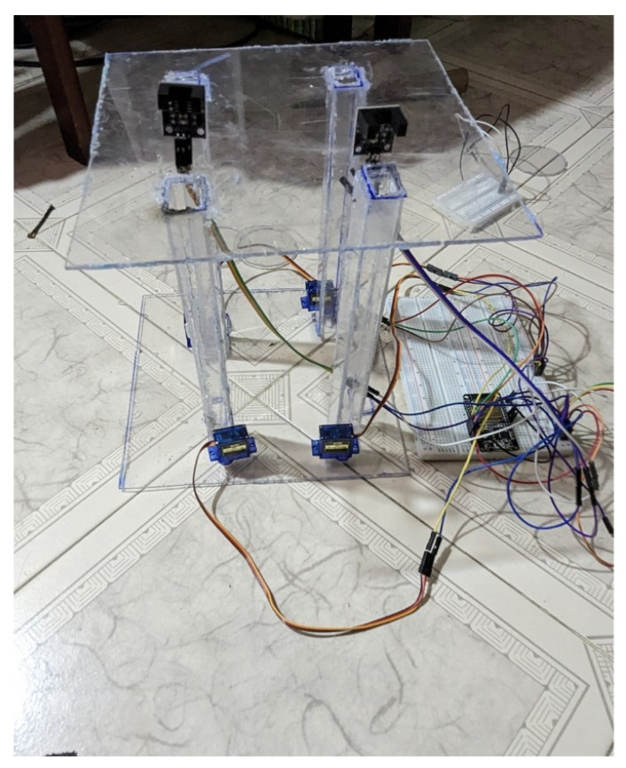

An Electronics and Communication Engineer with hands-on project experience and industry exposure as a Quality Engineer at Foxconn — now growing towards Embedded Engineering.
I am an Electronics and Communication Engineering graduate with strong interest in embedded systems, testing, and automation. I completed projects in embedded design and worked at Foxconn, one of the world's largest electronics manufacturing companies. I enjoy working with hardware, sensors, timing logic, and real-time embedded behaviors.

An embedded automation system that dispenses medicines at scheduled times using microcontroller-based timing, motor control, and sensor detection.
Email: yourmail@gmail.com
GitHub: github.com/poojachinnadurai
LinkedIn: Your LinkedIn Profile